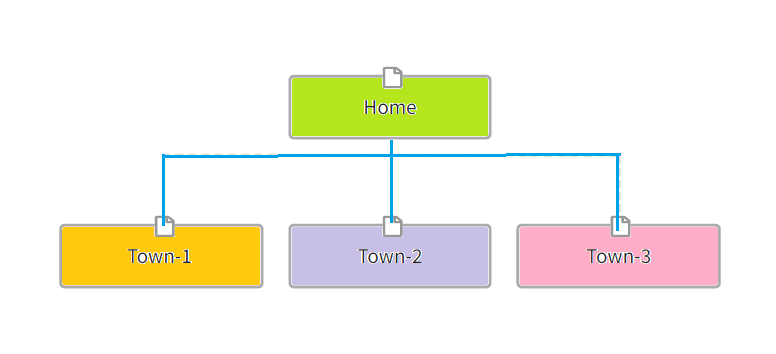

- 1. Home (This page)
Site Name: Weather Spot Reporter
Site Purpose:
The 'Weather Spot Reporter' is designed to provide current weather stories with corresponding images and information sections for all three towns selected. In other words, it works as a portal site of targeted local areas for the people who need weather information. The town weather pages contain weather conditions and other town information.
Domain Name: weatherspotreport.com
Logo:
Site Map:
